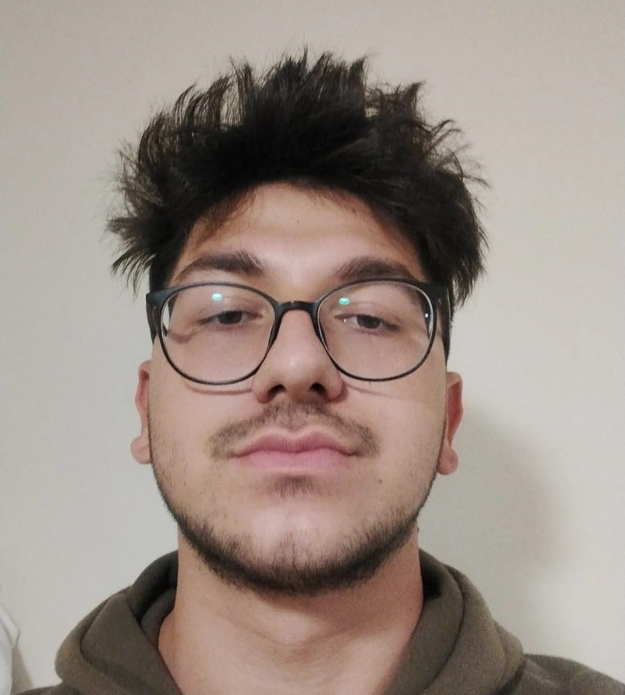

Hakkımda

Merhaba! Ben Oğuzhan Cantekin, İstanbul Üniversitesi Cerrahpaşa'da Bilgisayar Mühendisliği öğrencisiyim. Yazılım geliştirmeye olan ilgim, çocukluk yıllarıma dayanıyor. Teknolojiye olan merakım, beni sürekli yeni projeler yapmaya teşvik etti. Şu an, yapay zeka, veri analizi ve sinyal işleme gibi konularda çalışıyorum.
Hayatımın Özeti
Teknolojiyle iç içe büyüdüm. İlk bilgisayarımı aldığımda programlamaya olan ilgim başladı ve zamanla bu alanda kendimi geliştirmeye karar verdim. Eğitim hayatımda yazılım mühendisliği alanında çeşitli projelere katıldım, stajlar yaptım ve birçok farklı programlama dilinde uygulamalar geliştirdim. Hedefim, yazılım dünyasında yenilikçi projelerle kendimi tanıtmak.
Eğitim
Şu an İstanbul Üniversitesi Cerrahpaşa'da Bilgisayar Mühendisliği 3. sınıf öğrencisiyim. Eğitimim sırasında çok sayıda yazılım geliştirme projesinde yer aldım ve bu süreçte pek çok teknolojiyi öğrenme fırsatı buldum. Gelecekte, akademik kariyer yapmayı ve yazılım geliştirme alanında uzmanlaşmayı planlıyorum.
Hedeflerim
- Yapay zeka ve makine öğrenmesi alanlarında derinleşmek.
- Veri analizi ve bilgisayarla görme alanlarında projeler yapmak.
- Gerçek dünyadaki sorunlara çözüm getirecek yazılımlar geliştirmek.